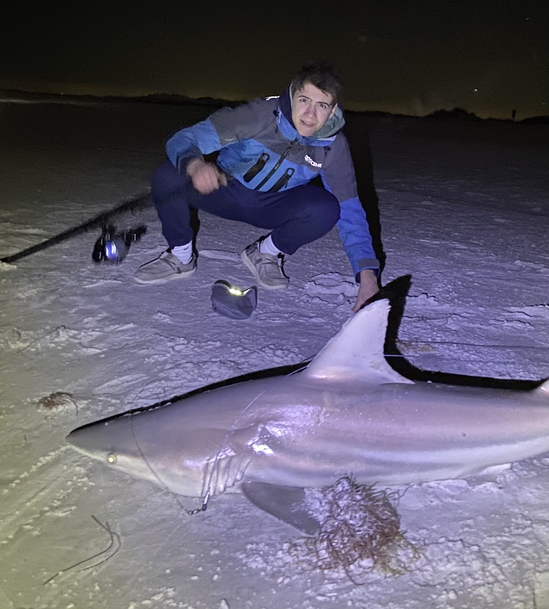

Fishing Trip Finder

This project is a system that uses web scraping to find beach rentals that are available starting 2 days from now. I designed it to work with Sato Real Estate for development. I worked through many iterations and finally came to the point it is at currently. The idea of this system is to track prices and find deals when you book close to the start date. The system also incorporates airfare and uses Avelo Airlines to find them. The whole project saves all the info about prices for houses and planes in a MySql database.
Key Features
- Historical Prices: Saves all historical data of prices in a MySql database. This allows me to go back and look at historical trends of the houses and planes.
- Automatic Emails: Automaticly sends an email to users each day of what the upcomng prices are for hotels and plane tickets.
Technologies Used
- Webscraping: Uses webscraping to extract data from Sato Realestate's website and from Avelo Airlines
- MySql: Uses MySql to save and store price data along with house id's.
Check out the Project on GitHub